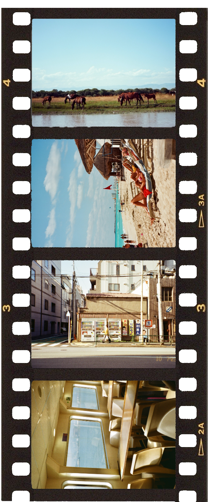

One of my many cameras, this is one that I've been using since 2021. I started doing film photography in 2020 as a habit to keep me occupied during COVID. Over the years film photography has become one of my most constant, favourite, and expensive art mediums to work with. I've gone over well over 100 film rolls (yikes!) and counting (even more yikes!). I've resonated so much with film simply because it's such a "in the moment" medium. Having perfectionist tendencies, I often fixate too much on the small details, and as I'm writing this, I have changed the spacing, colour, and alignment of this very text several times. But fixation is fundamentally impossible when it comes to shooting film. Sure you can consider the composition and lighting, but at the end of the day anything could really happen with film. It can come out ten times worse or better than what you planned (if you even plan), and that's something I've come to love. Anyhoo, this is the camera I have on my desk today, and here are some photos I've taken with it: ⠀⠀⠀. . ﾟ . . , . ⠀⠀⠀⠀⠀⠀⠀⠀⠀⠀⠀⠀⠀⠀⠀⠀⠀⠀ ..⠀⠀⠀. . ﾟ . . ✦ , . ⠀⠀⠀⠀⠀⠀⠀⠀⠀⠀⠀⠀⠀⠀⠀⠀⠀⠀ * . ﾟ . . ✦ , . ⠀⠀⠀⠀⠀⠀⠀⠀⠀⠀ ..
